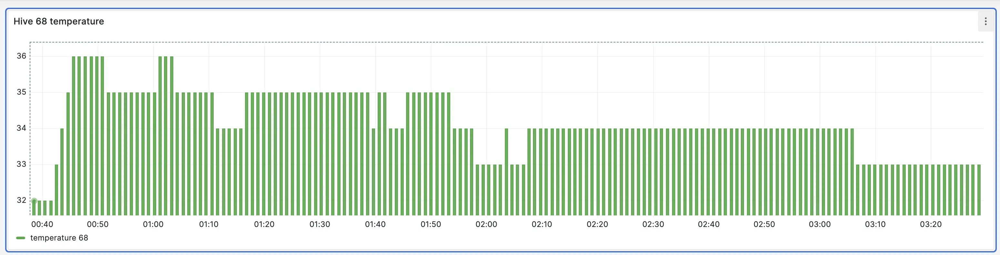
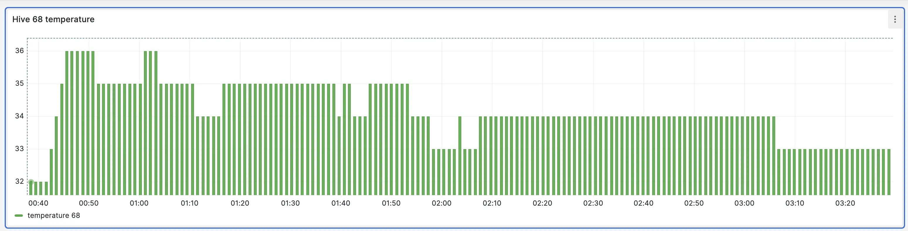

Shape the future of beekeeping
Beekeeper, Founding engineer
I am a software engineer and 5 years ago I became a beekeeper to improve pollination of my garden and get higher yields. To me, bees are also a cute and interesting pet.
Bees are key species for our food security. Farmers are cooperating with beekeepers to increase yields through precise pollination.
Traditional beekeeping requires observability of a bee colony, because bees can experience starvation, queen loss, late swarming, or get Varroa destructor mite infestation which weakens the colony and causes overwintering collapse.
Observability is typically solved with a hard physical labor and frequent and time-limited inspections. Dressed in a protective suit, in the summer heat, you need to lift 20 kg beehive sections, which were designed 150 years ago and notice small details while you are getting stung by defending bees, causing inspection stress and killing bees.
As your apiary grows, this work becomes unscalable. Industrial beekeepers have multiple apiaries at distant locations that are hard to reach. Existing solutions do not adequately solve these issues
💡 Our goal is to help beekeepers with observability and automation. Our vision is a fully autonomous multi-hive Robotic Apiary that can remotely inspect colonies. We will reach this step by step, starting with a software.
By providing actionable metrics and automation, beekeepers become more efficient, spend less time in the field and analyze more, doing precise intervention only when needed.
Gratheon app is built on the shoulders of open-source software and is fully open source too.
Join us to improve life of 100 million bee colonies worldwide and meet pollination demand for more. We're looking for investors to scale our development, engineers to join our team, beekeepers to run field testing and advisors to guide us.
Got some ideas?
Tell us in Discord Sign up